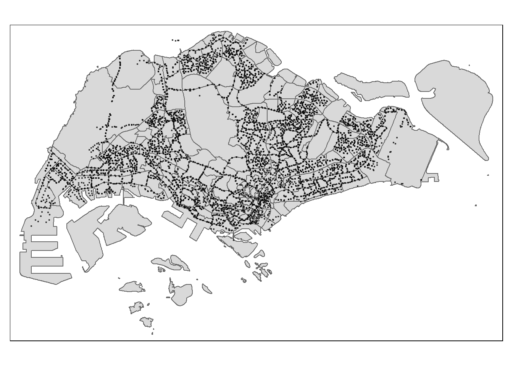
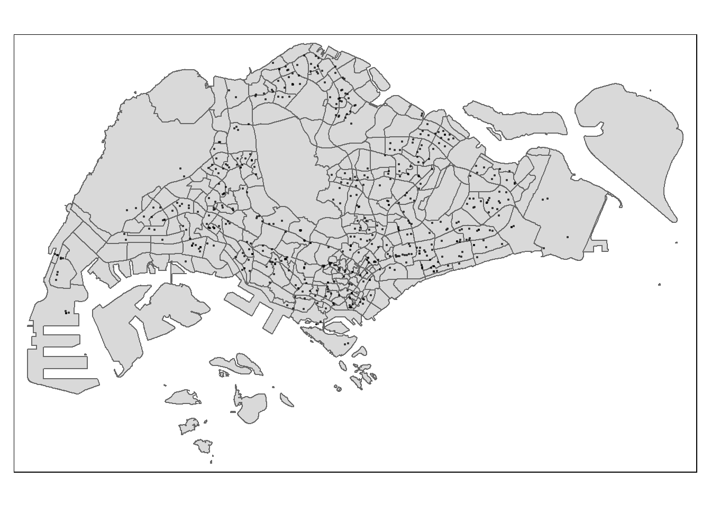
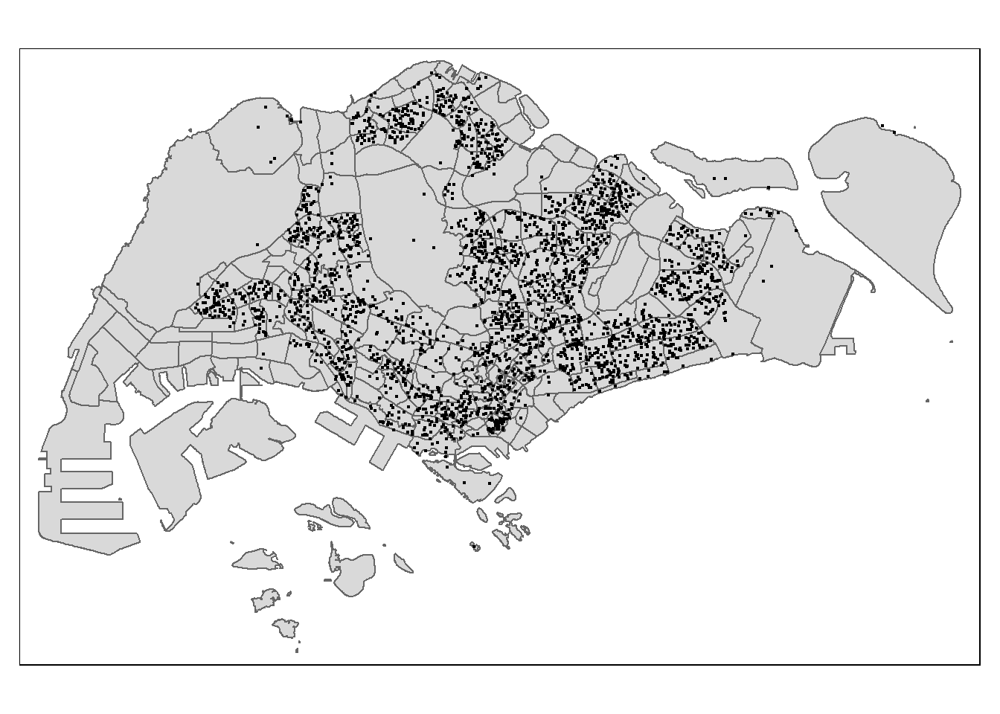
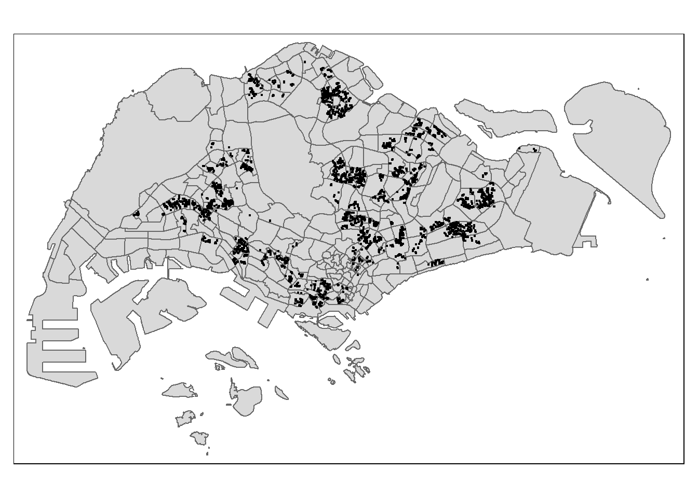
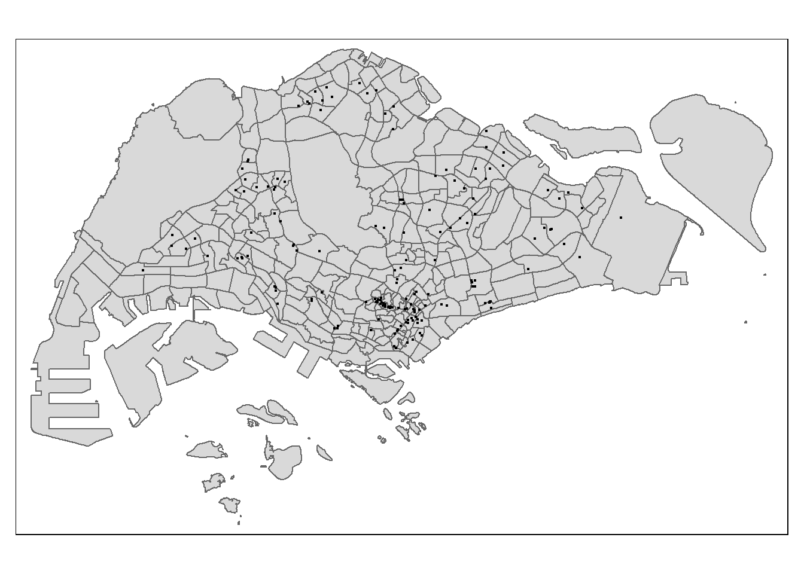
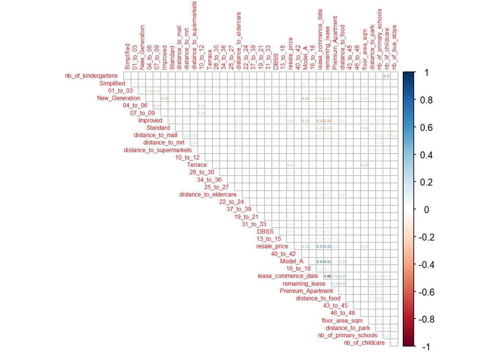
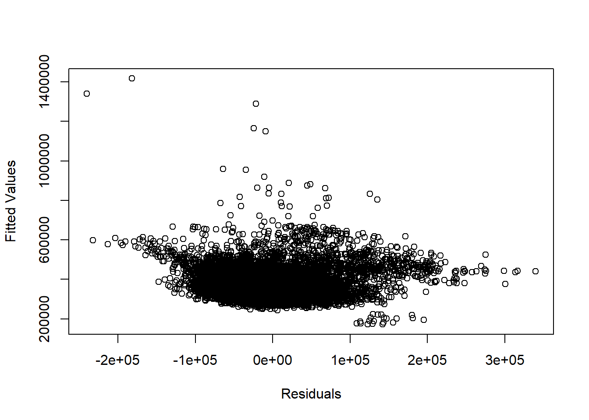

pacman::p_load(olsrr, corrplot, ggpubr, sf, spdep,
GWmodel, tmap, tidyverse, gtsummary,
ranger, SpatialML, rsample, Metrics,
janitor, stargazer, lmtest, robustbase)Predicting HDB Public Housing Resale Prices using Geographically Weighted Methods
Take-home Exercise 3
1 Getting Started
In this Take-home Exercise 3, we will try using geographically weighted methods to predict the resale price of HDB public housing in Singapore. You will find in the next to sections a brief description of the data sets used and where to retrieve them as well as the list of all the libraries needed for this project and a description of their specific usage.
1.1 Installing and Loading Packages
For the purpose our this project, we have selected a list of libraries that will allow to perform all the necessary data cleaning, handling and analysis.
The following list shows the libraries that will be used and their purpose for this assignment:
pacman
tidyverse
janitor
sf
spdep
tmap
corrplot
olsrr
gtsummary
knitr
httr
onemapsapi
xml2
rvest
stringr
ggmap
ggpubr
GWmodel
SpatialML
Metrics
rsample
To install and load the packages, we use the p_load() function of the pacman package. It automatically checks if packages are installed, installs them if they are not installed, and loads the packages into the R environment.
pacman::p_load(knitr, httr, onemapsgapi, xml2, rvest,
stringr, ggmap)options(digits = 15)1.2 The Data
For the purpose of this assignment, extensive amount of data was extracted from the web. You will find below a table that directs you to the webpage on which you can retrieve the data sets.
2 Retrieving and Importing the Geospatial Data
In this first section that addresses the data import, we will be going through the necessary work to load the geospatial data correctly into our R environment.
Note that in this section, we will be load data previously retrieved from the web, but also using some APIs to collect necessary variables that will play an important role in our regression models.
2.1 Master Plan 2019 with sub-zones
The first geospatial data set that we are importing is the 2019 Master Plan with sub-zones. Since it is a shp file, we use the st_read() function of the sf package to properly import the data frame.
mpsz.sf = st_read(dsn = "data/geospatial/mpsz2019",
layer = "MPSZ-2019")Reading layer `MPSZ-2019' from data source
`C:\p-haas\IS415\Take-home_Ex\Take-home_Ex03\data\geospatial\mpsz2019'
using driver `ESRI Shapefile'
Simple feature collection with 332 features and 6 fields
Geometry type: MULTIPOLYGON
Dimension: XY
Bounding box: xmin: 103.605700705134 ymin: 1.15869870063517 xmax: 104.088483065163 ymax: 1.47077483208461
Geodetic CRS: WGS 84The import was successful, however, before moving on I would like to check if all geometries are valid, and also if the projection code is correectly encoded.
any(st_is_valid(mpsz.sf) == FALSE)[1] TRUEIt seems like we have invalid geometries. Now, let’s check the CRS code of the data frame.
st_crs(mpsz.sf)Coordinate Reference System:
User input: WGS 84
wkt:
GEOGCRS["WGS 84",
DATUM["World Geodetic System 1984",
ELLIPSOID["WGS 84",6378137,298.257223563,
LENGTHUNIT["metre",1]]],
PRIMEM["Greenwich",0,
ANGLEUNIT["degree",0.0174532925199433]],
CS[ellipsoidal,2],
AXIS["latitude",north,
ORDER[1],
ANGLEUNIT["degree",0.0174532925199433]],
AXIS["longitude",east,
ORDER[2],
ANGLEUNIT["degree",0.0174532925199433]],
ID["EPSG",4326]]It looks like the EPSG and coordinate system does not correspond to the Singaporean SVY21. So, we will change that. We pipe the st_transform() and st_make_valid() functions to solve the two issues we had just pointed out.
mpsz.sf = mpsz.sf %>%
st_make_valid() %>%
st_transform(3414)any(st_is_valid(mpsz.sf) == FALSE)[1] FALSEst_crs(mpsz.sf)Coordinate Reference System:
User input: EPSG:3414
wkt:
PROJCRS["SVY21 / Singapore TM",
BASEGEOGCRS["SVY21",
DATUM["SVY21",
ELLIPSOID["WGS 84",6378137,298.257223563,
LENGTHUNIT["metre",1]]],
PRIMEM["Greenwich",0,
ANGLEUNIT["degree",0.0174532925199433]],
ID["EPSG",4757]],
CONVERSION["Singapore Transverse Mercator",
METHOD["Transverse Mercator",
ID["EPSG",9807]],
PARAMETER["Latitude of natural origin",1.36666666666667,
ANGLEUNIT["degree",0.0174532925199433],
ID["EPSG",8801]],
PARAMETER["Longitude of natural origin",103.833333333333,
ANGLEUNIT["degree",0.0174532925199433],
ID["EPSG",8802]],
PARAMETER["Scale factor at natural origin",1,
SCALEUNIT["unity",1],
ID["EPSG",8805]],
PARAMETER["False easting",28001.642,
LENGTHUNIT["metre",1],
ID["EPSG",8806]],
PARAMETER["False northing",38744.572,
LENGTHUNIT["metre",1],
ID["EPSG",8807]]],
CS[Cartesian,2],
AXIS["northing (N)",north,
ORDER[1],
LENGTHUNIT["metre",1]],
AXIS["easting (E)",east,
ORDER[2],
LENGTHUNIT["metre",1]],
USAGE[
SCOPE["Cadastre, engineering survey, topographic mapping."],
AREA["Singapore - onshore and offshore."],
BBOX[1.13,103.59,1.47,104.07]],
ID["EPSG",3414]]The two issues seem to be solved. Note that I show you how to proceed when importing geospatial data here but will not do so in such an extensive manner later. My goal here is to show you how to replicate my way of proceeding when handling the data for the first time. To make the reading easier, I have cut out all my exploration of this webpage and left only the essential and necessary code.
Using the qtm() function of the tmap package, we can make a quick visualization of the geometry stored in the sf data frame.
qtm(mpsz.sf)2.2 MRT Train stations
Importing MRT Exits into an sf data frame.
As explained just before, I will be sticking with the necessary code only from now on. Using the following code chunk, we import the MRT Train Stations into an sf data frame.
mrt_exits.sf = st_read(dsn = "data/geospatial/TrainStationExit/TrainStationExit",
layer = "Train_Station_Exit_Layer") %>%
st_transform(crs=3414)Reading layer `Train_Station_Exit_Layer' from data source
`C:\p-haas\IS415\Take-home_Ex\Take-home_Ex03\data\geospatial\TrainStationExit\TrainStationExit'
using driver `ESRI Shapefile'
Simple feature collection with 562 features and 2 fields
Geometry type: POINT
Dimension: XY
Bounding box: xmin: 6134.08550000004 ymin: 27499.6967999991 xmax: 45356.3619999997 ymax: 47865.9227000009
Projected CRS: SVY21Using the tmap package, we can conveniently plot the MRT Exits on the Singaporean map.
tmap_mode("plot")
tm_shape(mpsz.sf)+
tm_polygons()+
tm_shape(mrt_exits.sf)+
tm_dots(alpha = 0.5)2.3 Bus Stop Locations
Importing Bus Stops into an sf data frame.
bus_stops.sf = st_read(dsn = "data/geospatial/BusStopLocation/BusStop_Feb2023",
layer = "BusStop") %>%
st_transform(3414)Reading layer `BusStop' from data source
`C:\p-haas\IS415\Take-home_Ex\Take-home_Ex03\data\geospatial\BusStopLocation\BusStop_Feb2023'
using driver `ESRI Shapefile'
Simple feature collection with 5159 features and 3 fields
Geometry type: POINT
Dimension: XY
Bounding box: xmin: 3970.12161372974 ymin: 26482.1007183008 xmax: 48284.5630137296 ymax: 52983.8165183011
Projected CRS: SVY21tmap_mode("plot")
tm_shape(mpsz.sf)+
tm_polygons()+
tm_shape(bus_stops.sf)+
tm_dots(alpha = 0.5)
2.4 Supermarket data
Importing Supermarket Locations into an sf data frame.
supermarkets.sf = st_read("data/geospatial/supermarkets/supermarkets-kml.kml") %>%
st_transform(3414)Reading layer `SUPERMARKETS' from data source
`C:\p-haas\IS415\Take-home_Ex\Take-home_Ex03\data\geospatial\supermarkets\supermarkets-kml.kml'
using driver `KML'
Simple feature collection with 526 features and 2 fields
Geometry type: POINT
Dimension: XYZ
Bounding box: xmin: 103.625764663231 ymin: 1.2471504063107 xmax: 104.003578458884 ymax: 1.46152554782754
z_range: zmin: 0 zmax: 0
Geodetic CRS: WGS 84tmap_mode("plot")
tm_shape(mpsz.sf)+
tm_polygons()+
tm_shape(supermarkets.sf)+
tm_dots(alpha = 0.5)
2.5 Retrieving the independent variables using the OneMap API
We will be using the One Map Singapore API to retrieve some of the independent variables that we will be using later on in our regression model.
We will be taking a few preliminary steps before extracting the variables. You will find everything you need to replicate my work in the following sections.
2.5.1 Retrieving the API token using the onemapsgapi package
The first step to getting the API key is to create an account on the One Map website (click here to access the registration tutorial).
Now that you are registered, we may retrieve the API key using the onemapsgapi package and its get_token() function. By simply entering your registration email and password, you will get a valid API key for a three-day period.
Note that if you want to learn more about the One Map API, you should definitely check their website and their web app that allows to test the API’s services.
token_api = get_token(email = "xxx@xxx.xxx",
password = "...")2.5.2 Using the API to retrieve the variables available on OneMap
The first step to retrieving our independent variables is to look at the available data provided by One Map. We do so using the httr package that allows us to make HTML queries. Using the GET() function, we retrieve every theme info of the OneMap API.
url = "https://developers.onemap.sg/privateapi/themesvc/getAllThemesInfo"
query <- list("token" = token_api)
result <- GET(url, query = query)Using the content() function, we may look at the information retrieved, however, you should be made aware that the result from our GET() command is quite messy. So, you will see in the next section how we extract the theme names and store them into a list.
content(result)2.5.3 Creating the variable list
As explained, the information retrieved is quite messy. So, we will be storing in a list the essential information that we will use later on.
Using a for loop, I store the theme specific information into a list called themes_list.
themes_list = list()
for (i in 1:length(content(result)$Theme_Names)){
themes_list = append(themes_list, content(result)$Theme_Names[[i]])
}To take a look at the information stored into our list, you may use the next code chunk. However, since the list is quite long, I won’t print the output/information here and will directly give you a list you the variables I have extracted.
themes_listIn the next code chunk, you may see the variables that I carefully selected. They give information about: Eldercare Services, Hawker Centres, Food Courts, Parks in Singapore, Kindergartens, and Childcare Centres.
ind_variables = c("eldercare", "hawkercentre", "hawkercentre_new", "healthier_hawker_centres", "maxwell_fnb_map", "healthiercaterers", "relaxsg", "nationalparks", "kindergartens", "childcare")I have also picked-up some other interesting variables that may be included later in my regression model to improve the quality of the future model.
extra_variables = c("lta_cycling_paths", "disability", "hsgb_fcc", "sportsg_sport_facilities", "ssc_sports_facilities", "wastedisposalsite", "drainageconstruction", "cpe_pei_premises", "sewerageconstruction", "danger_areas", "aquaticsg", "moh_isp_clinics", "heritagetrees", "nparks_activity_area", "exercisefacilities", "mha_uav_2015", "playsg", "underconstruction_facilities", "preschools_location", "hdbcyclingunderconstruction", "boundary_5km", "hdbluppropunderconstruction", "parkingstandardszone", "libraries", "cyclingpath", "dengue_cluster", "greenbuilding", "nparks_uc_parks", )You won’t see these additional variables in my model due to the computing power of my computer. However, I strongly recommend to try an include these potential independent variables to improve the model.
2.5.4 Retrieving the available variables with the OneMap API
Using the code chunk below, you can retrieve the location name and its coordinates based on the previously created list of variables. We store this information into a data frame to make our use of this data easier
df = data.frame()
url = "https://developers.onemap.sg/privateapi/themesvc/retrieveTheme"
for (x in ind_variables){
query <- list("queryName" = x, "token" = token_api)
result <- GET(url, query = query)
print("Start")
print(x)
for (i in 2:length(content(result)$SrchResults)){
new_row = c(content(result)$SrchResults[[i]]$NAME,
str_split_fixed(content(result)$SrchResults[[i]]$LatLng, ",", 2)[1],
str_split_fixed(content(result)$SrchResults[[i]]$LatLng, ",", 2)[2],
content(result)$SrchResults[[1]]$Theme_Name)
df = rbind(df, new_row)
}
}
colnames(df)<-c("location_name", "lat", "lon", "variable_name")Note that retrieving the data takes a few minutes, so I took care of exporting the data frame into a csv file to avoid running the previous code chunk multiple times.
write_csv(df, "data/geospatial/retrieved_variables.csv")We now have part of our independent variables stored into a csv file that we will import back into our R environment.
retrieved_variables = read_csv("data/geospatial/retrieved_variables.csv", )If we look back to the variables we chose to retrieve using the One Map API, we had sub-categories to our independent variables.
unique(retrieved_variables$variable_name)[1] "eldercare" "hawker_centres" "parks" "kindergartens"
[5] "child_care" For instance, we have four sub-categories for hawker centres and food courts. We shall simplify our work by renaming these sub-categories under one name only. Using the next code chunk, we may do so.
retrieved_variables$variable_name = str_replace(retrieved_variables$variable_name,
"Eldercare Services",
"eldercare")
retrieved_variables$variable_name = str_replace(retrieved_variables$variable_name,
"^Hawker Centres$",
"hawker_centres")
retrieved_variables$variable_name = str_replace(retrieved_variables$variable_name,
"Hawker Centres_New",
"hawker_centres")
retrieved_variables$variable_name = str_replace(retrieved_variables$variable_name,
"Healthier Hawker Centres",
"hawker_centres")
retrieved_variables$variable_name = str_replace(retrieved_variables$variable_name,
"Maxwell Chambers F&B map",
"hawker_centres")
retrieved_variables$variable_name = str_replace(retrieved_variables$variable_name,
"Healthier Caterers",
"hawker_centres")
retrieved_variables$variable_name = str_replace(retrieved_variables$variable_name,
"Parks@SG",
"parks")
retrieved_variables$variable_name = str_replace(retrieved_variables$variable_name,
"Parks",
"parks")
retrieved_variables$variable_name = str_replace(retrieved_variables$variable_name,
"Kindergartens",
"kindergartens")
retrieved_variables$variable_name = str_replace(retrieved_variables$variable_name,
"Child Care Services",
"child_care")unique(retrieved_variables$variable_name)[1] "eldercare" "hawker_centres" "parks" "kindergartens"
[5] "child_care" We shall now proceed to creating sf objects from the extracted coordinates.
2.5.5 Transforming the data frame to sf data frame
Using the st_as_sf() function from the sf package, we can transform our set of coordinates into sf point objects.
retrieved_variables.sf = st_as_sf(retrieved_variables,
coords = c("lon", "lat"),
crs = 4326) %>%
st_transform(3414)We shall check if our data points have been correctly transformed by plotting the points on the Singapore map using the tmap package.
tmap_mode("plot")
tm_shape(mpsz.sf)+
tm_polygons()+
tm_shape(retrieved_variables.sf)+
tm_dots()
3 Retrieving and Importing the Aspatial Data
3.1 Resale Price of HDB flats
After retrieving the resale HDB prices from the data.gov.sg website, I moved the folder into my data folder, it contains all the data sets necessary for our analysis, and more precisely stored it into the aspatial folder.
The downloaded data is stored in a folder called resale-flat-prices, itself containing multiple files. To choose the right file, we can use the base r function list.files() to return a list of the file’s names.
path = "data/aspatial/resale-flat-prices"
files = list.files(path)
files[1] "metadata-resale-flat-prices.txt"
[2] "resale-flat-prices-based-on-approval-date-1990-1999.csv"
[3] "resale-flat-prices-based-on-approval-date-2000-feb-2012.csv"
[4] "resale-flat-prices-based-on-registration-date-from-jan-2015-to-dec-2016.csv"
[5] "resale-flat-prices-based-on-registration-date-from-jan-2017-onwards.csv"
[6] "resale-flat-prices-based-on-registration-date-from-mar-2012-to-dec-2014.csv"Looking at the above list, it seems clear that we should use file n°5 as it contains the data from 2017 and later. It gives us the intuition that we may need to treat the data and take a subset of data rows within the analysis period (2021 to 2023). We will import the data using the read_csv() function from the readr package.
resale_price = read_csv(file = paste(path, files[5], sep = "/"))We should take a quick look at the fields contained in the resale_price data frame. We do so using the glimpse() function.
glimpse(resale_price)Rows: 148,096
Columns: 11
$ month <chr> "2017-01", "2017-01", "2017-01", "2017-01", "2017-…
$ town <chr> "ANG MO KIO", "ANG MO KIO", "ANG MO KIO", "ANG MO …
$ flat_type <chr> "2 ROOM", "3 ROOM", "3 ROOM", "3 ROOM", "3 ROOM", …
$ block <chr> "406", "108", "602", "465", "601", "150", "447", "…
$ street_name <chr> "ANG MO KIO AVE 10", "ANG MO KIO AVE 4", "ANG MO K…
$ storey_range <chr> "10 TO 12", "01 TO 03", "01 TO 03", "04 TO 06", "0…
$ floor_area_sqm <dbl> 44, 67, 67, 68, 67, 68, 68, 67, 68, 67, 68, 67, 67…
$ flat_model <chr> "Improved", "New Generation", "New Generation", "N…
$ lease_commence_date <dbl> 1979, 1978, 1980, 1980, 1980, 1981, 1979, 1976, 19…
$ remaining_lease <chr> "61 years 04 months", "60 years 07 months", "62 ye…
$ resale_price <dbl> 232000, 250000, 262000, 265000, 265000, 275000, 28…The available fields are as follows:
- month: it indicates the month of transaction
- town: it indicates the district
- flat_type: it indicates the number of rooms in the flat
- block: it indicates the block number of the HDB flat
- street_name: it indicates the street number and name
- storey_range: it indicates the floor number of the flat
- floor_area_sqm: it indicates the floor area of the flat in square meter
- flat_model: it indicates the HDB flat model
- lease_commence_date: it indicates the starting year date of the lease (in Singapore, HDB flats are 99-year leaseholds)
- remaining_lease: it indicates the remaining years and months on the 99-year leasehold
- resale_price: it indicates the resale price of a given flat in SGD (Singapore dollars)
Now, we will use the head() function to look at the available data in each field.
head(resale_price)# A tibble: 6 × 11
month town flat_…¹ block stree…² store…³ floor…⁴ flat_…⁵ lease…⁶ remai…⁷
<chr> <chr> <chr> <chr> <chr> <chr> <dbl> <chr> <dbl> <chr>
1 2017-01 ANG MO … 2 ROOM 406 ANG MO… 10 TO … 44 Improv… 1979 61 yea…
2 2017-01 ANG MO … 3 ROOM 108 ANG MO… 01 TO … 67 New Ge… 1978 60 yea…
3 2017-01 ANG MO … 3 ROOM 602 ANG MO… 01 TO … 67 New Ge… 1980 62 yea…
4 2017-01 ANG MO … 3 ROOM 465 ANG MO… 04 TO … 68 New Ge… 1980 62 yea…
5 2017-01 ANG MO … 3 ROOM 601 ANG MO… 01 TO … 67 New Ge… 1980 62 yea…
6 2017-01 ANG MO … 3 ROOM 150 ANG MO… 01 TO … 68 New Ge… 1981 63 yea…
# … with 1 more variable: resale_price <dbl>, and abbreviated variable names
# ¹flat_type, ²street_name, ³storey_range, ⁴floor_area_sqm, ⁵flat_model,
# ⁶lease_commence_date, ⁷remaining_lease3.1.1 Selecting trasactions of 3 Room apartments from 2021 onwards
My previously mentioned intuition is confirmed. The month variable takes data starting in January 2017 and, through quick data manipulation, we will have to restrain the data frames to the 2021-2022 analysis period and 2023 data testing period. In addition, it looks like the town field in unnecessary and may be dropped. We only need the block and steet_name fields to geocode the addresses and create sf geometry.
Here we pipe the select() function to remove the town variable, filter and grepl functions to create a subset of the data by only selecting transactions that took place in 2021 to 2023, and finally pipe once again the filter function to select only three room HDB flats.
rp_3rooms = resale_price %>%
select(-2) %>%
filter(grepl("202[123]", month)) %>%
filter(flat_type == "3 ROOM")3.1.2 Transforming the storey_range column to dummy variables
Since we would like to include the storey_range variable in our analysis and the column only takes categorical data, we shall create dummy variables to indicate the storey range of each HDB flat.
The first step is to look at what are the unique values in the column. Using the unique() function, we retrieve in the form of a list the unique categorical values.
unique(rp_3rooms$storey_range) [1] "04 TO 06" "01 TO 03" "07 TO 09" "10 TO 12" "13 TO 15" "16 TO 18"
[7] "19 TO 21" "25 TO 27" "22 TO 24" "37 TO 39" "31 TO 33" "34 TO 36"
[13] "40 TO 42" "46 TO 48" "28 TO 30" "43 TO 45"Now, using a for loop and the ifelse() function, we will create a new column for each unique categorical variable contained in the storey_range field and assign a 1 if the particular HDB flat belongs to the specific storey range.
for (i in unique(rp_3rooms$storey_range)){
rp_3rooms[i] = ifelse(rp_3rooms$storey_range == i, 1, 0)
}3.1.3 Transforming the flat_model column to dummy variables
We repeat the same process with the flat_model variable.
unique(rp_3rooms$flat_model)[1] "New Generation" "Improved" "Model A"
[4] "Simplified" "Standard" "Premium Apartment"
[7] "DBSS" "Terrace" for (i in unique(rp_3rooms$flat_model)){
rp_3rooms[i] = ifelse(rp_3rooms$flat_model == i, 1, 0)
}3.1.4 Transforming the remaining_lease to a numerical variable
If you remember previously when we took a look at the different data fields available in our data frame, you could notice that the remaining_lease variable stored character data, however, we would like it to be a numerical data field.
To transform our column into a numerical field, we use a for loop with if/else statements. This will allow us to extract the number of years and months remaining on the lease and create a variable that stores the years remaining before expiration of the lease.
lease_remaining = list()
for (i in 1:nrow(rp_3rooms)){
lease = str_extract_all(rp_3rooms$remaining_lease, "[0-9]+")[[i]]
year = as.numeric(lease[1])
if (length(lease) < 2){
lease_remaining = append(lease_remaining, year)
} else {
month = as.numeric(lease[2])
lease_remaining = append(lease_remaining, round(year+month/12, 2))
}
}rp_3rooms$remaining_lease = as.numeric(lease_remaining)3.1.5 Geocoding the address
The first step to geocoding the address - retrieving the latitude and longitude based in the address - is to create a new column that stores the cleaned full address. Consequently, we create a new field called cleaned_address that combines both the block and street_name fields. This will allow us to retrieve the geocode of the HDB flats in our query.
rp_3rooms["cleaned_address"] = paste(rp_3rooms$block, rp_3rooms$street_name, sep = " ")Now that we have a column that stores the cleaned addresses, we can move on to the geocoding. By using the httr package and One Map API, we will create GET requests that retrieve the full address of the HDB flat, its longitude and latitude. We will store all this data into three lists to later create three additional columns in our data frame.
url = "https://developers.onemap.sg/commonapi/search"
full_address = list()
latitude = list()
longitude = list()
for (address in rp_3rooms$cleaned_address){
query <- list("searchVal" = address,
"returnGeom" = "Y", "getAddrDetails" = "Y")
res <- GET(url, query = query)
full_address = append(full_address, content(res)$results[[1]]$ADDRESS)
latitude = append(latitude, content(res)$results[[1]]$LATITUDE)
longitude = append(longitude, content(res)$results[[1]]$LONGITUDE)
}rp_3rooms$full_address = full_address
rp_3rooms$lat = latitude
rp_3rooms$lon = longitudeBefore exporting the data frame to a csv file (to avoid repeating this lengthy step), we shall use the apply function to transform our three newly created columns to the right type (character / numerical type).
options(digits=15)
rp_3rooms$full_address = apply(rp_3rooms[, 28], 2, as.character)
rp_3rooms$lat = apply(rp_3rooms[, 29], 2, as.numeric)
rp_3rooms$lon = apply(rp_3rooms[, 30], 2, as.numeric)write.csv(rp_3rooms, "data/aspatial/geocoded_resale_price.csv", row.names = FALSE)We import the geocoded data back into the R environment.
rp_3rooms = read_csv("data/aspatial/geocoded_resale_price.csv")3.1.6 Dropping the irrelevant variables
head(rp_3rooms)# A tibble: 6 × 38
month flat_t…¹ block stree…² store…³ floor…⁴ flat_…⁵ lease…⁶ remai…⁷ resal…⁸
<chr> <chr> <chr> <chr> <chr> <dbl> <chr> <dbl> <dbl> <dbl>
1 2021-01 3 ROOM 331 ANG MO… 04 TO … 68 New Ge… 1981 59 260000
2 2021-01 3 ROOM 534 ANG MO… 04 TO … 68 New Ge… 1980 58.2 265000
3 2021-01 3 ROOM 561 ANG MO… 01 TO … 68 New Ge… 1980 58.1 265000
4 2021-01 3 ROOM 170 ANG MO… 07 TO … 60 Improv… 1986 64.2 268000
5 2021-01 3 ROOM 463 ANG MO… 04 TO … 68 New Ge… 1980 58.2 268000
6 2021-01 3 ROOM 542 ANG MO… 04 TO … 68 New Ge… 1981 59.1 270000
# … with 28 more variables: `04 TO 06` <dbl>, `01 TO 03` <dbl>,
# `07 TO 09` <dbl>, `10 TO 12` <dbl>, `13 TO 15` <dbl>, `16 TO 18` <dbl>,
# `19 TO 21` <dbl>, `25 TO 27` <dbl>, `22 TO 24` <dbl>, `37 TO 39` <dbl>,
# `31 TO 33` <dbl>, `34 TO 36` <dbl>, `40 TO 42` <dbl>, `46 TO 48` <dbl>,
# `28 TO 30` <dbl>, `43 TO 45` <dbl>, cleaned_address <chr>,
# full_address <chr>, lat <dbl>, lon <dbl>, `New Generation` <dbl>,
# Improved <dbl>, `Model A` <dbl>, Simplified <dbl>, Standard <dbl>, …We will drop the following irrelevant fields.
rp_3rooms.cleaned = rp_3rooms %>%
select(-c("flat_type", "block", "street_name", "storey_range", "flat_model", "cleaned_address", "full_address"))3.1.7 Creating the sf geometry
Using the tibble data frame and lon/lat fields, we create a sf data frame and visualize the data with the tmap package.
rp_3rooms.sf = st_as_sf(rp_3rooms.cleaned,
coords = c("lon", "lat"),
crs = 4326) %>%
st_transform(3414)tmap_mode("plot")
tm_shape(mpsz.sf)+
tm_polygons()+
tm_shape(rp_3rooms.sf)+
tm_dots()
3.2 Primary School data
After thoroughly looking on the web, I was not able to find a list of primary schools of Singapore to download. So, to improve the reproducibility of my work, I scrapped the sgschooling website to retrieve what seemed to me like an up-to-date list of primary schools.
3.2.1 Scrapping Primary Schools online with rvest package
The first step is to retrieve the names of the primary schools. Looking at the code chunk below, I used the httr, xml2, and rvest packages to create a GET request, read the HTML code of the website, and extract the names of the schools to store them into a list.
url = "https://sgschooling.com/school/"
res = GET(url)
wiki_read <- xml2::read_html(res, encoding = "UTF-8")
testt = wiki_read %>%
html_elements("a")
testt1 = testt[grepl("school/", testt)]
pattern <- ">(.*)<"
result <- regmatches(testt1, regexec(pattern, testt1))
schools = list()
for (i in 1:length(result)){
new_row = result[[i]][2]
schools = append(schools, new_row)
}3.2.2 Using the OneMap API to retrieve the schools’ coordinates
I then used this list and the One Map API to geocode these schools and retrieve their address as well as their longitude and latitude, and then stored all of it into a data frame.
Note that in my code I include an if/else statement in the case where we do not get a perfect match and are not able to retrieve information with the API.
primary_sc = data.frame()
url = "https://developers.onemap.sg/commonapi/search"
for (i in 1:length(schools)){
query <- list("searchVal" = schools[[i]],
"returnGeom" = "Y",
"getAddrDetails" = "Y")
result <- GET(url, query = query)
if (length(content(result)$results) == 0){
new_row = c(schools[[i]],
NA,
NA,
NA)
primary_sc = rbind(primary_sc, new_row)
} else{
new_row = c(schools[[i]],
content(result)$results[[1]]$ADDRESS,
content(result)$results[[1]]$LATITUDE,
content(result)$results[[1]]$LONGITUDE)
primary_sc = rbind(primary_sc, new_row)
}
}
colnames(primary_sc) = c("location_name", "full_address", "lat", "lon")3.2.3 Checking for missing information
sum(is.na(primary_sc$full_address))It seems like we have missing data for 9 primary schools. It is probably because the name of the school is not recognized by the API, so we will try to clean them to get their information into our data frame.
primary_sc %>%
filter(is.na(primary_sc$full_address) == TRUE) %>%
select(1)By checking on the web, it seems like the “Juying Primary School” has merged with the “Pioneer Primary School”, so we may drop the “Juying Primary School” from the data frame.
primary_sc1 = primary_sc %>%
filter(!grepl("Juying Primary School", location_name))Now, regarding the remaining schools, after performing a tests, it seems like I am not able to retrieve the information using the API so we will be filling the values with, first, the Google Maps API and then, if there are still some empty information, I will be filling the values manually by looking online.
You may want to check the next two code chunks I have used to try and retrieve the missing information using the OneMap API.
primary_sc1$location_name = str_replace(primary_sc1$location_name,
"St. ", "")
# I have also tried replacing the string with: "Saint" and "St" but I am not able to make the API retrieve the dataurl = "https://developers.onemap.sg/commonapi/search"
for (i in 1:nrow(primary_sc1)){
if (is.na(primary_sc1[i, 2])){
query <- list("searchVal" = primary_sc1[i, 1],
"returnGeom" = "Y",
"getAddrDetails" = "Y")
result <- GET(url, query = query)
if (length(content(result)$results) == 0){
next
} else{
primary_sc1[i, 2] = content(result)$results[[1]]$ADDRESS
primary_sc1[i, 3] = content(result)$results[[1]]$LATITUDE
primary_sc1[i, 4] = content(result)$results[[1]]$LONGITUDE
}} else{ next
}
}These are the schools with the missing information.
primary_sc1 %>%
filter(is.na(primary_sc1$full_address) == TRUE) %>%
select(1)Using the Google Maps API and its library ggmap, we will loop through the schools with missing coordinates. Since all these schools are located consecutively in the data frame, I use the following structure to create the list of schools.
While looping through these schools, we use the geocode() function of ggmap to retrieve the latitude and longitude based on the school name and assign these values in the corresponding missing cells of the primary_sc1 data frame.
register_google(key = "xxx")
missing_sc = primary_sc1[grep("St. Andrew’s Junior School", primary_sc1$location_name):grep("St. Stephen’s School", primary_sc1$location_name), 1]
for (i in missing_sc){
coords = geocode(i)
primary_sc1[grep(i, primary_sc1$location_name), 3] = coords$lat
primary_sc1[grep(i, primary_sc1$location_name), 4] = coords$lon
}We should check if we still have missing coordinates. Note that we are missing information in the full_address column, however, it is not a great deal since we will be using the coordinates to create the sf objects later on.
primary_sc1 %>%
filter(is.na(primary_sc1$lat) == TRUE)We are still missing coordinates for three schools. We will be filling these values manually.
primary_sc1[grep("St. Anthony’s Primary School", primary_sc1$location_name), 3:4] = list(1.3796337949311097, 103.75033229288428)
primary_sc1[grep("St. Gabriel’s Primary School", primary_sc1$location_name), 3:4] = list(1.3499742816603595, 103.86268328706147)
primary_sc1[grep("St. Stephen’s School", primary_sc1$location_name), 3:4] = list(1.3189794629543288, 103.9179118196036)We are now good to go, we can proceed to creating a sf data frame, however, before doing so, I will export the data frame into my data folder to avoid using the Google Maps API again (it is free under a limited amount of queries).
write.csv(primary_sc1, "data/aspatial/primary_schools.csv", row.names = FALSE)primary_schools = read_csv("data/aspatial/primary_schools.csv")3.2.4 Creating the sf data frame
primary_schools.sf = st_as_sf(primary_schools,
coords = c("lon", "lat"),
crs = 4326) %>%
st_transform(3414)3.2.5 Visualizing the data
tmap_mode("plot")
tm_shape(mpsz.sf)+
tm_polygons()+
tm_shape(primary_schools.sf)+
tm_dots()
3.2.6 Creating a field with the Top 20 Primary Schools
We will now create an additional variable that indicates whether one primary school is considered good or not. I made the selection factor be whether the primary school is in the Top 20 primary schools or not. I extracted from the internet the Top 20 list that you may find below. With this list, we can create a dummy variable that stores a 1 (0) if the school is part (or not) of the Top 20.
top20_sc = c("Methodist Girls’ School (Primary)", "Catholic High School", "Tao Nan School", "Pei Hwa Presbyterian Primary School", "Holy Innocents’ Primary School", "Nan Hua Primary School", "CHIJ St. Nicholas Girls’ School", "Admiralty Primary School", "St. Hilda’s Primary School", "Ai Tong School", "Anglo-Chinese School (Junior)", "Chongfu School", "St. Joseph’s Institution Junior", "Anglo-Chinese School (Primary)", "Singapore Chinese Girls’ Primary School", "Nanyang Primary School", "South View Primary School", "Pei Chun Public School", "Kong Hwa School", "Rosyth School")
primary_schools.sf["top20"] = ifelse(primary_schools.sf$location_name %in% top20_sc == TRUE,
1, 0)Note that I originally forgot to create this variable and am doing it after having ran all the regressions. Unfortunately, since my computer crashes most of the time when trying to perform the geographic regression, I won’t be able to include it now, but I still made sure to include how to create this variable.
3.3 Shopping Mall data
We encounter the same problem with the shopping malls as when looking for a data set of primary schools, so I decided to scrape Wikipedia for this one.
We perform very similar steps as the previous section on primary schools, so I won’t run you through every step.
3.3.1 Scraping Wikipedia to extract the list of malls in Singapore
url = "https://en.wikipedia.org/wiki/List_of_shopping_malls_in_Singapore"
res = GET(url)
wiki_read <- xml2::read_html(res, encoding = "UTF-8")
testt = wiki_read %>%
html_nodes("div.div-col") %>%
html_elements("ul") %>%
html_elements("li") %>%
html_text()
malls = str_replace(testt, "\\[.*]", "")3.3.2 Using the OneMap API to retrieve the malls’ coordinates
shp_malls = data.frame()
url = "https://developers.onemap.sg/commonapi/search"
for (i in 1:length(malls)){
query <- list("searchVal" = malls[i],
"returnGeom" = "Y",
"getAddrDetails" = "Y")
result <- GET(url, query = query)
if (length(content(result)$results) == 0){
new_row = c(malls[i],
NA,
NA,
NA)
shp_malls = rbind(shp_malls, new_row)
} else{
new_row = c(malls[i],
content(result)$results[[1]]$ADDRESS,
content(result)$results[[1]]$LATITUDE,
content(result)$results[[1]]$LONGITUDE)
shp_malls = rbind(shp_malls, new_row)
}
}
colnames(shp_malls) = c("location_name", "full_address", "lat", "lon")sum(is.na(shp_malls$full_address))3.3.3 Filling missing information with ggmap
shp_malls %>%
filter(is.na(shp_malls$full_address) == TRUE) %>%
select(1)Before using the Google Maps API, I decided to research about these nine malls and found that:
The PoMo mall is now called GR.iD, so we shall change the name in the data frame
The KINEX mall is found under the name KINEX, so we shall remove the additional information from the name
The Paya Lebar Quarter mall is found under the name PLQ mall on Google Maps, so we shall change the name in the data frame
shp_malls[grep("PoMo", shp_malls$location_name), 1] = "GR.iD";
shp_malls[grep("KINEX", shp_malls$location_name), 1] = "KINEX";
shp_malls[grep("PLQ", shp_malls$location_name), 1] = "PLQ mall"register_google(key = "xxx")
missing_malls = shp_malls %>%
filter(is.na(shp_malls$full_address) == TRUE) %>%
`$`(location_name)
for (i in list(missing_malls)[[1]]){
coords = geocode(i)
shp_malls[grep(i, shp_malls$location_name), 3] = coords$lat
shp_malls[grep(i, shp_malls$location_name), 4] = coords$lon
}shp_malls %>%
filter(is.na(shp_malls$lat) == TRUE)3.3.4 Filling missing information manually
We are still missing coordinates of the KINEX mall. We will be filling these values manually.
shp_malls[grep("KINEX", shp_malls$location_name), 3:4] = c(1.314893715213727, 103.89480904154526)We are now good to go, we can proceed to creating a sf data frame, however, before doing so, I will export the data frame into my data folder to avoid using the Google Maps API again (it is free under a limited amount of queries).
write.csv(shp_malls, "data/aspatial/shopping_malls.csv", row.names = FALSE)shp_malls = read_csv("data/aspatial/shopping_malls.csv")3.3.5 Creating an sf data frame
shp_malls.sf = st_as_sf(shp_malls,
coords = c("lon", "lat"),
crs = 4326) %>%
st_transform(3414)3.3.6 Visualizing the data
tmap_mode("plot")
tm_shape(mpsz.sf)+
tm_polygons()+
tm_shape(shp_malls.sf)+
tm_dots()
4 Preparing the final data frame
In this section, we will prepare the following variables:
Proximity to CBD ; Proximity to eldercare ; Proximity to foodcourt/hawker centres ; Proximity to MRT ; Proximity to park ; Proximity to good primary school ; Proximity to shopping mall ; Proximity to supermarket
Numbers of kindergartens within 350m ; Numbers of childcare centres within 350m ; Numbers of bus stop within 350m ; Numbers of primary school within 1km
4.1 Proximity variables
4.1.1 Proximity to CBD
We will consider the Downtown Core planning area to be the Central Business District. Given the previous statement, we will compute the distance of each HDB flats to the CBD area.
The first step is to compute the nearest feature between the HDB flats and CDB area. With this, we then can create a column that stores the distance between the two features (e.g., distance between each flat and nearest part of the CBD).
cbd_zone.sf = mpsz.sf %>%
filter(PLN_AREA_N == "DOWNTOWN CORE")
nearest = st_nearest_feature(rp_3rooms.sf, cbd_zone.sf)
rp_3rooms.sf$distance_to_cdb = as.numeric(
st_distance(rp_3rooms.sf,
cbd_zone.sf[nearest,],
by_element=TRUE) )Note that I had forgot to compute this variable when running my regressions, so you won’t see it later but I made sure to include the code to compute it.
4.1.2 Proximity to eldercare
eldercare.sf = retrieved_variables.sf %>%
filter(variable_name == "eldercare")nearest = st_nearest_feature(rp_3rooms.sf, eldercare.sf)
rp_3rooms.sf$distance_to_eldercare = as.numeric(
st_distance(rp_3rooms.sf,
eldercare.sf[nearest,],
by_element=TRUE) )4.1.3 Proximity to food court / hawker centres
hawker_centres.sf = retrieved_variables.sf %>%
filter(variable_name == "hawker_centres")nearest = st_nearest_feature(rp_3rooms.sf, hawker_centres.sf)
rp_3rooms.sf$distance_to_food = as.numeric(
st_distance(rp_3rooms.sf,
hawker_centres.sf[nearest,],
by_element=TRUE) )4.1.4 Proximity to MRT
nearest = st_nearest_feature(rp_3rooms.sf, mrt_exits.sf)
rp_3rooms.sf$distance_to_mrt = as.numeric(
st_distance(rp_3rooms.sf,
mrt_exits.sf[nearest,],
by_element=TRUE) )4.1.5 Proximity to park
parks.sf = retrieved_variables.sf %>%
filter(variable_name == "parks")nearest = st_nearest_feature(rp_3rooms.sf, parks.sf)
rp_3rooms.sf$distance_to_park = as.numeric(
st_distance(rp_3rooms.sf,
parks.sf[nearest,],
by_element=TRUE) )4.1.6 Proximity to good primary school
nearest = st_nearest_feature(rp_3rooms.sf, primary_schools.sf)
rp_3rooms.sf$top20_schools = as.numeric(
st_distance(rp_3rooms.sf,
primary_schools.sf[nearest,],
by_element=TRUE) )4.1.7 Proximity to shopping mall
nearest = st_nearest_feature(rp_3rooms.sf, shp_malls.sf)
rp_3rooms.sf$distance_to_mall = as.numeric(
st_distance(rp_3rooms.sf,
shp_malls.sf[nearest,],
by_element=TRUE) )4.1.8 Proximity to supermarket
nearest = st_nearest_feature(rp_3rooms.sf, supermarkets.sf)
rp_3rooms.sf$distance_to_supermarkets = as.numeric(
st_distance(rp_3rooms.sf,
supermarkets.sf[nearest,],
by_element=TRUE) )4.2 Number of … within given distance
The first step is to create buffers for each HDB flat. We create two buffers, one of 350m and one of 1000m (1km).
buffer_350 = st_buffer(rp_3rooms.sf, 350)
buffer_1000 = st_buffer(rp_3rooms.sf, 1000)Using these buffers will allow us to compute the number of a given variable inside the buffer.
4.2.1 Numbers of kindergartens within 350m
kindergartens.sf = retrieved_variables.sf %>%
filter(variable_name == "kindergartens")rp_3rooms.sf$nb_of_kindergartens = lengths(
st_intersects(buffer_350, kindergartens.sf))4.2.2 Numbers of childcare centres within 350m
child_care.sf = retrieved_variables.sf %>%
filter(variable_name == "child_care")rp_3rooms.sf$nb_of_childcare = lengths(
st_intersects(buffer_350, child_care.sf))4.2.3 Numbers of bus stop within 350m
rp_3rooms.sf$nb_of_bus_stops = lengths(
st_intersects(buffer_350, bus_stops.sf))4.2.4 Numbers of primary school within 1km
rp_3rooms.sf$nb_of_primary_schools = lengths(
st_intersects(buffer_1000, primary_schools.sf))4.3 Saving the data
We will save the data into a rds file to avoid running all the previous code every time we would like to work on the assignment since some of these steps are very lengthy.
write_rds(rp_3rooms.sf, "data/geospatial/final_dataset.rds")rp_3rooms.sf = read_rds("data/geospatial/final_dataset.rds")4.4 Check for missing data
sum(is.na(rp_3rooms.sf))[1] 0There is no missing that so we can move on to creating the hedonistic pricing models.
5 Hedonic Pricing model
The first step to our hedonistic pricing model is to clean the name of our fields. We do so using the rename function.
rp_3rooms.sf = rp_3rooms.sf %>%
rename("01_to_03" = "01 TO 03", "04_to_06" = "04 TO 06", "07_to_09" = "07 TO 09",
"10_to_12" = "10 TO 12", "13_to_15" = "13 TO 15", "16_to_18" = "16 TO 18",
"19_to_21" = "19 TO 21", "22_to_24" = "22 TO 24", "25_to_27" = "25 TO 27",
"28_to_30" = "28 TO 30", "31_to_33" = "31 TO 33", "34_to_36" = "34 TO 36",
"37_to_39" = "37 TO 39", "40_to_42" = "40 TO 42", "43_to_45" = "43 TO 45",
"46_to_48" = "46 TO 48", "New_Generation" = "New Generation",
"Model_A" = "Model A", "Premium_Apartment" = "Premium Apartment")5.1 Splitting the data
Now that are fields are cleaned, we should split the data into two data frames. One data frame used for training and one for testing. We do so using the filter and grepl functions.
Note that you can use regular expressions to be more efficient when trying to string match.
rp_analysis.sf = rp_3rooms.sf %>%
filter(grepl("202[12]", month))
rp_testing.sf = rp_3rooms.sf %>%
filter(grepl("2023", month))6 Conventional OLS method
The first analysis we will perform is the “standard” or “conventional” OLS. This is a multiple linear regression that takes into account only our independent variables. It does not use geographical location as a determinant of the resale price of an HDB flat.
Before running the analysis, there are a few preliminary steps. We should check for: non-linear relationships between the independent variables and the dependent variables; multicollinearity; heteroscedasticity.
6.1 Multicollinearity
corrplot::corrplot(cor(rp_3rooms.sf %>%
st_drop_geometry() %>%
select(-c(1, 22, 23))),
diag = FALSE, order = "AOE", tl.pos = "td",
tl.cex = 0.5, method = "number", type = "upper")
6.2 MLR model
colnames(rp_3rooms.sf)rp_analysis.mlr <- lm(formula = resale_price ~ floor_area_sqm + remaining_lease +
`01_to_03` + `04_to_06` + `07_to_09` + `10_to_12` + `13_to_15` +
`16_to_18` + `19_to_21` + `22_to_24` + `25_to_27` + `28_to_30` +
`31_to_33` + `34_to_36` + `37_to_39` + `40_to_42` + `43_to_45` +
`New_Generation` + Improved + `Model_A` + Simplified + Standard +
`Premium_Apartment` + DBSS + distance_to_eldercare +
distance_to_food + distance_to_mrt + distance_to_park +
distance_to_mall + distance_to_supermarkets + nb_of_kindergartens +
nb_of_childcare + nb_of_bus_stops + nb_of_primary_schools,
data = rp_analysis.sf)
stargazer(rp_analysis.mlr, type="text")
====================================================
Dependent variable:
---------------------------
resale_price
----------------------------------------------------
floor_area_sqm 3,946.537***
(93.530)
remaining_lease 2,754.191***
(61.207)
`01_to_03` -257,839.693***
(52,620.249)
`04_to_06` -248,405.940***
(52,616.441)
`07_to_09` -241,109.221***
(52,616.860)
`10_to_12` -232,833.112***
(52,618.266)
`13_to_15` -224,504.937***
(52,626.152)
`16_to_18` -205,120.927***
(52,659.851)
`19_to_21` -174,800.777***
(52,757.140)
`22_to_24` -158,664.647***
(52,852.098)
`25_to_27` -127,272.290**
(52,922.790)
`28_to_30` -96,167.414*
(53,084.925)
`31_to_33` -79,389.789
(53,208.006)
`34_to_36` -58,544.715
(53,510.236)
`37_to_39` -47,678.241
(53,296.651)
`40_to_42` -28,303.576
(56,745.135)
`43_to_45` 27,962.420
(58,710.939)
New_Generation -429,929.634***
(10,800.164)
Improved -423,909.938***
(11,010.310)
Model_A -422,627.638***
(10,789.771)
Simplified -402,908.906***
(11,227.145)
Standard -413,750.267***
(11,376.659)
Premium_Apartment -399,095.702***
(11,179.217)
DBSS -348,968.293***
(11,638.597)
distance_to_eldercare -16.072***
(0.945)
distance_to_food -19.181***
(1.600)
distance_to_mrt -27.268***
(1.376)
distance_to_park -20.903***
(1.530)
distance_to_mall -11.363***
(1.352)
distance_to_supermarkets -5.749**
(2.591)
nb_of_kindergartens 4,512.822***
(642.853)
nb_of_childcare -2,789.315***
(295.193)
nb_of_bus_stops -910.529***
(188.399)
nb_of_primary_schools -7,938.305***
(369.917)
Constant 675,321.297***
(54,923.892)
----------------------------------------------------
Observations 12,608
R2 0.638
Adjusted R2 0.637
Residual Std. Error 52,512.632 (df = 12573)
F Statistic 652.049*** (df = 34; 12573)
====================================================
Note: *p<0.1; **p<0.05; ***p<0.016.3 Linearity
plot(residuals(rp_analysis.mlr), fitted.values(rp_analysis.mlr),
xlab="Residuals", ylab="Fitted Values")
6.4 Heteroscedasticity
gqtest(rp_analysis.mlr)
Goldfeld-Quandt test
data: rp_analysis.mlr
GQ = 0.9281659246132, df1 = 6269, df2 = 6269, p-value = 0.99841450489
alternative hypothesis: variance increases from segment 1 to 27 GWR methods
7.1 Converting sf data frame to SpatialPointDataFrame
rp_analysis.sp = as_Spatial(rp_analysis.sf)7.1.1 Computing adaptive bandwidth
bw_analysis_adaptive <- bw.gwr(resale_price ~ floor_area_sqm + remaining_lease +
X01_to_03 + X04_to_06 + X07_to_09 + X10_to_12 + X13_to_15 +
X16_to_18 + X19_to_21 + X22_to_24 + X25_to_27 + X28_to_30 +
X31_to_33 + X34_to_36 + X37_to_39 + X40_to_42 + X43_to_45 +
New_Generation + Improved + Model_A + Simplified + Standard +
Premium_Apartment + DBSS + distance_to_eldercare +
distance_to_food + distance_to_mrt + distance_to_park +
distance_to_mall + distance_to_supermarkets + nb_of_kindergartens +
nb_of_childcare + nb_of_bus_stops + nb_of_primary_schools,
data = rp_analysis.sp, approach="CV", kernel="gaussian",
adaptive=TRUE, longlat=FALSE)write_rds(bw_analysis_adaptive, "data/model/bw_analysis_adaptive.rds")7.1.2 Constructing the adaptive bandwidth gwr model
bw_adaptive <- read_rds("data/model/bw_analysis_adaptive.rds")gwr_adaptive <- gwr.basic(formula = resale_price ~ floor_area_sqm + remaining_lease + X01_to_03 +
X04_to_06 + X07_to_09 + X10_to_12 + X13_to_15 + X16_to_18 + X19_to_21 +
X22_to_24 + X25_to_27 + X28_to_30 + X31_to_33 + X34_to_36 + X37_to_39 +
X40_to_42 + X43_to_45 + New_Generation + Improved + Model_A + Simplified +
Standard + Premium_Apartment + DBSS + distance_to_eldercare + distance_to_food +
distance_to_mrt + distance_to_park + distance_to_mall + distance_to_supermarkets +
nb_of_kindergartens + nb_of_childcare + nb_of_bus_stops + nb_of_primary_schools,
data = rp_analysis.sp, bw=bw_adaptive, kernel = 'gaussian', adaptive=TRUE,
longlat = FALSE)write_rds(gwr_adaptive, "data/model/gwr_analysis_adaptive.rds")gwr_adaptive = read_rds("data/model/gwr_analysis_adaptive.rds")gwr_adaptive7.2 Dropping geometry
coords_train <- st_coordinates(rp_analysis.sf)write_rds(coords_train, "data/model/coords_train.rds" )coords_train = read_rds("data/model/coords_train.rds")rp_analysis.no_geom = rp_analysis.sf %>%
st_drop_geometry() %>%
select(-c(1, 3, 22:23))7.3 Calibrating Random Forest Model
rp_analysis.no_geom = rp_analysis.no_geom %>%
clean_names()set.seed(2410)
rf <- ranger(resale_price ~ floor_area_sqm + remaining_lease +
x01_to_03 + x04_to_06 + x07_to_09 + x10_to_12 + x13_to_15 +
x16_to_18 + x19_to_21 + x22_to_24 + x25_to_27 + x28_to_30 +
x31_to_33 + x34_to_36 + x37_to_39 + x40_to_42 + x43_to_45 +
new_generation + improved + model_a + simplified + standard +
premium_apartment + dbss + distance_to_eldercare +
distance_to_food + distance_to_mrt + distance_to_park +
distance_to_mall + distance_to_supermarkets + nb_of_kindergartens +
nb_of_childcare + nb_of_bus_stops + nb_of_primary_schools,
data = rp_analysis.no_geom)print(rf)7.4 Calibrating Geographical Random Forest Model
7.4.1 Calibrating using training data
gwRF_adaptive <- grf(formula = resale_price ~ floor_area_sqm + remaining_lease +
x01_to_03 + x04_to_06 + x07_to_09 + x10_to_12 + x13_to_15 +
x16_to_18 + x19_to_21 + x22_to_24 + x25_to_27 + x28_to_30 +
x31_to_33 + x34_to_36 + x37_to_39 + x40_to_42 + x43_to_45 +
new_generation + improved + model_a + simplified + standard +
premium_apartment + dbss + distance_to_eldercare +
distance_to_food + distance_to_mrt + distance_to_park +
distance_to_mall + distance_to_supermarkets + nb_of_kindergartens +
nb_of_childcare + nb_of_bus_stops + nb_of_primary_schools,
dframe=rp_analysis.no_geom, bw=bw_adaptive, kernel="adaptive",
coords=coords_train)write_rds(gwRF_adaptive, "data/model/gwRF_adaptive250.rds")gwRF_adaptive <- read_rds("data/model/gwRF_adaptive.rds")8 Testing
tmap_mode("plot")
tm_shape(mpsz.sf)+
tm_polygons()+
tm_shape(rp_3rooms.sf)+
tm_dots(col = "blue")+
tm_shape(st_buffer(rp_3rooms.sf, 350))+
tm_fill(col = "red",
alpha = 0.1)rp_3rooms.sf %>%
filter(st_distance(rp_3rooms.sf, kindergartens.sf) <= 350)spatialrisk::concentration(rp_3rooms.sf, kindergartens.sf,
value = count, radius = 350)